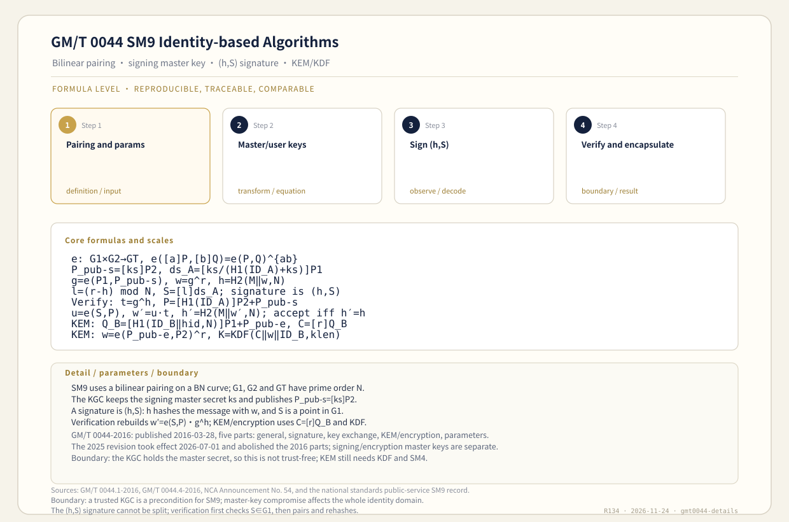
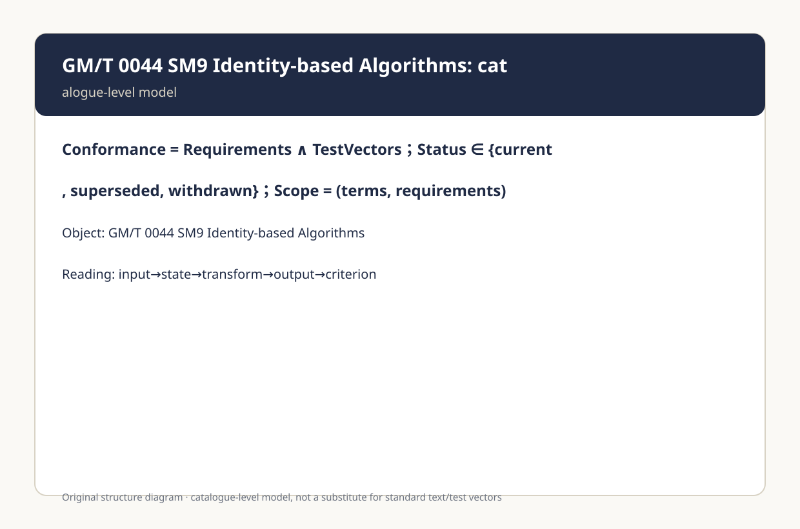

Principles
Standard: GM/T 0044 SM9 Identity-based Cryptographic Algorithms (GM/T 0044 SM9 标识密码算法). SM9 uses a bilinear pairing e:G1×G2→GT on a BN curve. The KGC keeps the signing master secret ks and publishes P_pub-s=[ks]P2; user A’s signing key is identity-derived: ds_A=[ks/(H1(ID_A)+ks)]P1. Signing computes g=e(P1,P_pub-s), chooses r, sets w=g^r and h=H2(M‖w,N), then l=(r-h) mod N and S=[l]ds_A, outputting (h,S). Verification computes t=g^h, P=[H1(ID_A)]P2+P_pub-s and u=e(S,P), sets w′=u·t and checks H2(M‖w′,N)=h. KEM uses the encryption public key P_pub-e to form Q_B=[H1(ID_B‖hid,N)]P1+P_pub-e, chooses r, and computes C=[r]Q_B, g=e(P_pub-e,P2), w=g^r and K=KDF(C‖w‖ID_B,klen).

Why it matters
SM9 removes certificates from public keys: a user public key is derived from the identity, and the KGC issues private keys with its master secret. The cost is a single point of trust: master-key compromise affects the whole identity domain, and signing and encryption master keys must be separated so one domain does not drag down the other.
Writing the pairing, ds_A, g/w/h and rehash makes clear why (h,S) cannot be split, and why verification must check S∈G1, pair and rehash rather than compare h alone.
Applications
Deployment fixes the system parameters, BN curve, P1/P2 and hash functions H1/H2; the KGC generates separate signing and encryption master keys and protects them. User registration derives signing/encryption keys from the ID, and private keys must be delivered over a trusted channel.
Signing records g→r→w→h→l→S; verification checks S∈G1, then computes t, P, u, w′ and h′. KEM/encryption forms Q_B from the recipient ID, computes C=[r]Q_B, w and KDF, then wraps data with SM4 or another symmetric cipher.
A shared name may belong to an algorithm, standard, event, person or term; this entry is responsible only for its catalogue binding and does not absorb adjacent records. If versions, regions or institutions define the name differently, the differences stay side by side.

Limits & attacks
The KGC is a single point of trust: master-key compromise, a forged private key or identity-registration takeover breaks the ownership of signatures and ciphertexts. Identity privacy also needs assessment: the ID directly enters public-key derivation and is not anonymous by default.
A signature (h,S) cannot be published as h alone or treated as a key; verification must check S∈G1 and reject infinity or wrong subgroups. Pairing, all-zero KDF output and r reuse must be handled; KEM only encapsulates a key and does not provide message confidentiality by itself.
History
Identity-based cryptography was proposed by Shamir in 1984. SM9 was published on 2016-03-28 as the five-part GM/T 0044-2016, covering general, signature, key exchange, KEM/encryption and parameters. The GB/T 38635 series raised it to a national standard in 2020.
The 2025 revision GM/T 0044.1—0044.5-2025 took effect on 2026-07-01 and abolished the 2016 parts on the same date; current use should check parameters, signatures and KEM against the current edition.
Worked example & verification
Formal model and reproduction steps
[S=\min_i S_i,\quad S_i\in{\text{密钥强度},\text{分组安全},\text{实现安全}}]
GM/T 0044 SM9 Identity-based Cryptographic Algorithms: the registered public parameters, key material or randomness, and message are mapped through the stated transformation to an output checked against the registered criterion. The worked example is a structural reproduction, not a new test vector; parameter ranges, standard versions and implementation details remain source-bound.
References
- Wikipedia search entry for GM/T 0044 SM9 标识密码算法. https://zh.wikipedia.org/w/index.php?search=GM%2FT%200044%20SM9%20%E6%A0%87%E8%AF%86%E5%AF%86%E7%A0%81%E7%AE%97%E6%B3%95
- Handbook of Applied Cryptography (Menezes, van Oorschot, Vanstone). https://www.cacr.math.uwaterloo.ca/hac/